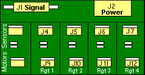

Installing Sample or Reagent Carriage
This procedure describes how to install a sample or reagent carriage when a sample or reagent carriage has been removed for repair or replacement.
-
Prepare the instrument.
- Remove the center gray and upper rear covers.
- Open the upper left and right front covers.
- Remove power from the motors by using the switch on the Power Distribution PCB labeled "All DC power (except CPU and reagent coolers)".
-
Install the sample or reagent carriage.
-
From the rear of the instrument, place the carriage over the location pins on the mounting plate and secure with the two mounting screws. For reagent carriage assemblies only, confirm that the metal waste chute of the carriage is positioned into the waste tube that it feeds.
Note:
- If replacing a carriage without a linear slide with a carriage with a linear slide, replace the mounting plate because the mounting pins are in a different location.
- The mounting plate comes with the new linear slide carriage. Use the screws with washers to secure the mounting plate to the baseplate.
-
Route the sensor and motor cables through the cable clamps on the rear of the incubator pick-and-place carriage and connect to the appropriate connectors on the carriage interface PCB.

Carriage Sensor Cable Connection Power Cable Connection Supply (DxI 600 and 800) J3 J8 Reagent 1 (DxI 600 and DxI 800) J4 J9 Reagent 2 (DxI 600 and DxI 800) J5 J10 Reagent 3 (DxI 800 only) J6 J11 Reagent 4 (DxI 800 only) J7 J12 - Replace the rear covers and restore power to the motors using the switch on the Power Distribution PCB labeled "All DC power (except CPU and reagent coolers)".
-
From the rear of the instrument, place the carriage over the location pins on the mounting plate and secure with the two mounting screws. For reagent carriage assemblies only, confirm that the metal waste chute of the carriage is positioned into the waste tube that it feeds.
-
If you are replacing a non-linear slide reagent carriage (old) with a linear slide carriage (new), then change the DVWaste alignment value in the specific.ini. If you are not replacing a non-linear slide reagent carriage with a linear slide reagent carriage or if you are replacing only a supply carriage, then proceed to verification.
Caution: A default DVWaste alignment of 20 steps causes carriage motion errors on reagent carriages with the linear slide when running on-board dilution assays only. This alignment must be changed to a value that is in the range of 4 to 9 steps. Follow the instructions below.
For Windows XP System and Software 5.2 or below:
- Select Start > Programs > Administrative Tools > Remote Desktop Connection to AU PC to open a connection to the instrument.
-
Right-click on the AU Object icon in the bottom right corner of the screen, and select
Exit.
Note: It might be necessary to use the scroll bars to locate the AU Object icon on the task bar of the screen.
- From the AU screen, select Programs > Windows Explorer > My Computer, and then select Local Disk (C:) or AU_PC (C:) >> AU.
- Locate the specific.ini file, right-click on the file, and then select Copy.
- Right-click on Local C: Drive or AU_PC(C:), and then select Paste. A copy of the specific.ini file is placed on C: drive.
- Double-click on the specific.ini file to open it.
- Select Edit > Find, and then enter DVWaste into the Find What field. Select Find Next to search the specific.ini file.
-
Change the DVWaste value from 20 to a value in the range of 4 to 9 for each replaced reagent pipettor under the appropriate ReagentShuttle heading.
Note: Manufacturing sets the value to 9 on new instruments.
- Select File > Save to save the changes. Select the X in the upper right corner to close the specific.ini file.
- Double-click the AU Object icon on the desktop to relaunch the AU software. Select the X in the upper right corner to close the remote desktop connection to the instrument.
For Windows 8 System and Software 5.3.1 or above:Note: DxI Software 5.3.1 is compatible with Windows XP console PC. If the software was installed on the Windows XP console PC, then follow the Windows XP section to configure the AU software settings.-
Open a remote desktop connection to the AU.
- Press the Windows key, select Remote Desktop Connection icon or type remote and open the Remote Desktop Connection program.
- Type 192.168.2.4 into the Computer field and select Connect.
- Enter user for the User Name and tech for the password if prompted.
- If prompted at the RDS warning screen, check the box for "Don't ask me again for connections to this computer" and select
Yes.
Note: For Windows 8, the default console IP address is 192.168.2.3 and the AU IP address is 192.168.2.4. Neither IP address changes during the software load process.
-
Shut down the AU Object program.
- Right click on the task bar and select Task Manager.
- In the Task Manager box, click on Processes, select AUobj Module, and click on End Task in the bottom corner of the box.
-
In the AU desktop, find the specific.ini file and make a copy of the file.
- Double click on Computer or File Explorer and select Local C: drive or AU_PC (C:) > AU > specific.ini, right-click on the specific.ini file, and then select Copy.
- Right-click on Local C: Drive or AU_PC(C:), and then select Paste. A copy of the specific.ini file is placed on C: drive.
- Double click on the specific.ini file to open the file in Notepad program.
- Select Edit > Find, and then enter DVWaste into the Find What field. Select Find Next to search the specific.ini file.
-
Change the DVWaste value from 20 to a value in the range of 4 to 9 for each replaced reagent pipettor under the appropriate ReagentShuttle heading.
Note: Manufacturing sets the value to 9 on new instruments.
- Select File > Save to save the changes. Select the X in the upper right corner to close the specific.ini file.
- Double-click the large AU Object Icon on the desktop to relaunch the AU Object.
-
Close the desktop sharing connection.
- From the AU Desktop, right click on Remote Desktop Connection icon on the upper left corner or on the task bar > Close or select the X in the upper right corner.
- Select OK at the Your remote session will be disconnected pop-up.
-
Verify proper operation of the carriage.
-
Confirm the carriage alignments to all intersecting devices. Adjust and align as needed.
-
Run the vessel exerciser to verify proper vessel movement into and out of the carriage.
- Supply Carriage - Bulk Feeder Exerciser
- Reagent Carriage - Reaction Route Exerciser
-
Confirm the carriage alignments to all intersecting devices. Adjust and align as needed.
- Initialize the instrument.
-
Verify system operation.
-
Perform system verification as stated in the Verification of Service Repair document .
Refer to the Admin: Verification of Service Repair document.
-
Perform system verification as stated in the Verification of Service Repair document .